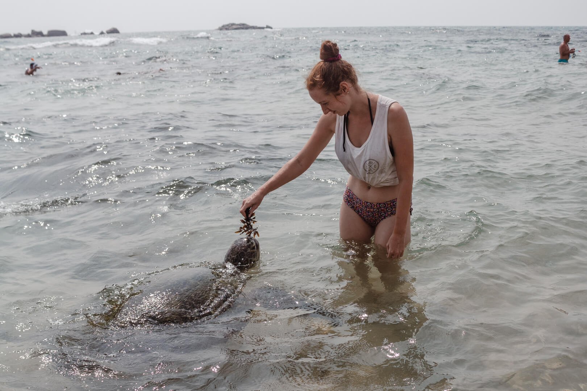
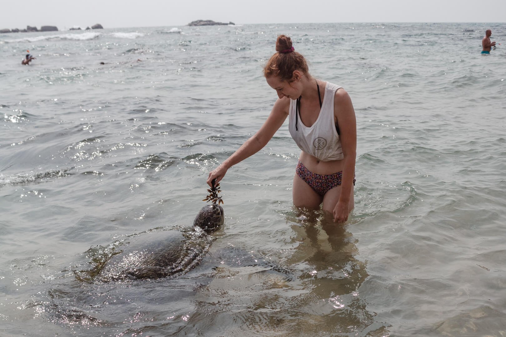

Welcome to Hikkaduwa
Turtle Hatchery
The Hikkaduwa Turtle Hatchery is a renowned conservation center located in the coastal town of Hikkaduwa, Sri Lanka. It is dedicated to the preservation and protection of sea turtles, which are an endangered species in many parts of the world. The hatchery plays a vital role in raising awareness about the importance of turtle conservation and actively contributes to the conservation efforts in the region. The hatchery serves as a sanctuary for injured, sick, and orphaned turtles, providing them with a safe environment for recovery and rehabilitation. Additionally, it acts as a hatchery for turtle eggs, protecting them from natural predators and human interference until they hatch. Once the baby turtles are born, the hatchery releases them into the ocean, ensuring their best chance of survival.
Things you can do in
Hikkaduwa Turtle Hatchery
Turtle Hatchery
Visit
You can visit the hatchery itself and observe the various stages of turtle conservation, from collecting eggs to hatching and releasing baby turtles into the sea. You'll learn about the different species of sea turtles found in the area, their life cycles, and the challenges they face.
Egg Collection
and Relocation
During the nesting season, you may have the opportunity to witness or participate in the collection of sea turtle eggs. Hatcheries often relocate these eggs to protected areas within the facility to safeguard them from natural predators and human disturbances.
Turtle
Feeding
At the hatchery, you can participate in feeding sessions for the resident turtles. This activity allows you to get up close and observe the turtles while they eat, providing insights into their behavior and dietary preferences.
Turtle Release Program
Hatcheries usually organize turtle release programs, where visitors can release the baby turtles into the ocean. This is a memorable experience as you directly contribute to the conservation of these endangered creatures by helping them on their journey to the sea.
Volunteer Opportunities
Some hatcheries offer volunteer programs where you can actively participate in conservation efforts. This may involve tasks such as cleaning turtle tanks, assisting with feeding, monitoring nests, and educating visitors about sea turtles.